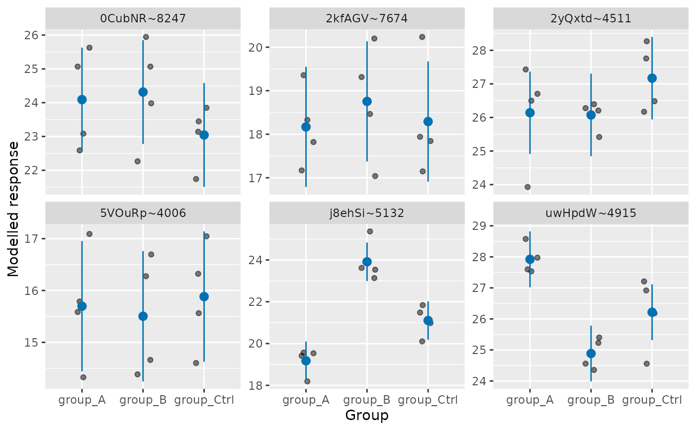
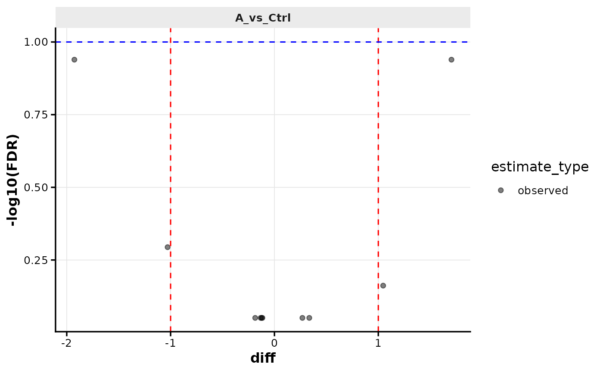

Standard R methods for results returned by build_contrast_analysis().
Printing reports the model specification, fit status and a coefficient preview
without computing contrasts. Summaries evaluate the contrasts and report counts at the requested
FDR and absolute effect thresholds.
Usage
# S3 method for class 'ContrastsFacadeBase'
print(x, digits = 3, ...)
# S3 method for class 'ContrastsFacadeBase'
summary(object, FDR_threshold = 0.05, diff_threshold = 1, ...)
# S3 method for class 'summary.ContrastsFacadeBase'
print(x, digits = 3, ...)
# S3 method for class 'ContrastsFacadeBase'
coef(object, ...)
# S3 method for class 'ContrastsFacadeBase'
vcov(object, ...)
# S3 method for class 'ContrastsFacadeBase'
confint(object, parm, level = 0.95, ...)
# S3 method for class 'ContrastsFacadeBase'
formula(x, ...)
# S3 method for class 'ContrastsFacadeBase'
nobs(object, ...)
# S3 method for class 'ContrastsFacadeBase'
fitted(object, ...)
# S3 method for class 'ContrastsFacadeBase'
predict(object, newdata = NULL, ...)
# S3 method for class 'ContrastsFacadeBase'
residuals(object, ...)
# S3 method for class 'ContrastsFacadeBase'
plot(x, type = c("fitted", "volcano", "ma"), subject = NULL, level = 0.95, ...)Arguments
- x, object
a fitted analysis returned by
build_contrast_analysis().- digits
significant digits of the numbers printed by
print()(default 3).- ...
arguments passed to the volcano or MA plotter by
plot(); unused by the other methods.- FDR_threshold
false discovery rate threshold for significant contrasts.
- diff_threshold
minimum absolute contrast effect for significance.
- parm
coefficient names or positive coefficient indices; omitted for all terms.
- level
confidence level, strictly between zero and one.
- newdata
for
predict(): data frame with the subject identifier and predictor columns;NULL(default) predicts every subject in every sample of the analysis input, including samples with missing responses.- type
plot type: fitted responses (default), FDR volcano or MA. Hurdle analyses default to volcano because they have two models.
- subject
character vector of identifiers from the first model subject column for fitted plots;
NULLselects up to six by FDR in the first contrast.
Value
print() returns its input invisibly. summary() returns a list of
class summary.ContrastsFacadeBase, with method, formula, fit status and a
per_contrast table of estimated, missing, significant, up and down counts
and median sigma and degrees of freedom when available.
Matrix models report NA for singularity because it is not recorded by limma.
coef() returns subject identifiers, term, estimate, standard error and df.
confint() adds Wald t confidence limits (conf.low, conf.high).
Limma uses moderated standard errors and degrees of freedom; Firth logistic
fits use normal Wald intervals (infinite df). formula() returns the fitted
model specification and nobs() returns a subject-keyed observation-count table.
Counts exclude LOD-filled responses. Combined hurdle results have no single
coefficient table, formula or observation count; inspect their intensity
and detection facades through analysis$contrast instead.
fitted() and residuals() return subject, sample, factor and available
child identifiers, response, fitted or residual, and a subject-level
imputed flag. Only observed responses from successful fits are included.
Values use the fitting scale: transformed intensity or detection probability.
Binomial responses are the fitted model's adjusted detection proportions;
response residuals equal response minus fitted value. Hurdle results require
selecting an intensity or detection component for these methods too.
plot() returns a ggplot visibly. By default, observed responses and fitted
cell means with confidence intervals are shown for six subjects selected by
the smallest FDR in the first contrast. Mixed-model means use fixed effects
and Satterthwaite uncertainty; detection means and limits are probabilities.
ROPECA displays one panel per peptide of each selected protein. Hurdle
analyses default to the volcano plot; request a component for fitted plots.
vcov() returns subject identifiers, term, term2 and covariance.
It uses backend covariance (borrowed for LOD refits) or, for matrix models,
the moderated variance times the inverse of the per-subject weighted design
crossproduct. Failed matrix fits are omitted.
predict() returns newdata with prediction on the fitting scale (probabilities for detection models;
mixed models at population level, without random effects) and imputed (the subject's fit is a
limit-of-detection refit). Hurdle results predict per component.
The fit status counts subjects that did not converge (not_converged). Per subject, converged and
iterations are columns of the model table: analysis$model$model_df for per-subject backends,
analysis$model$models$model_df for firth; hurdle results keep one table per component
(analysis$contrast$intensity$model, analysis$contrast$detection$model). Matrix backends (limma, deqms,
limpa) keep no per-subject status.
See also
Other modelling:
AnovaExtractor,
Contrasts,
ContrastsDEqMSFacade,
ContrastsDEqMSVoomFacade,
ContrastsFacadeBase,
ContrastsFirth,
ContrastsFirthFacade,
ContrastsHurdleFacade,
ContrastsHurdleNestedFacade,
ContrastsLMFacade,
ContrastsLMImputeFacade,
ContrastsLimma,
ContrastsLimmaFacade,
ContrastsLimmaImputeFacade,
ContrastsLimmaVoomFacade,
ContrastsLimmaVoomImputeFacade,
ContrastsLimpaFacade,
ContrastsLimpaNestedFacade,
ContrastsLmerNestedFacade,
ContrastsModerated,
ContrastsModeratedDEqMS,
ContrastsPlotter,
ContrastsRLMFacade,
ContrastsROPECA,
ContrastsROPECANestedFacade,
ContrastsROPECAV2,
ContrastsROPECAV2NestedFacade,
ContrastsRfitFacade,
ContrastsRfitImputeFacade,
ContrastsTable,
INTERNAL_FUNCTIONS_BY_FAMILY,
Model,
ModelFirth,
ModelLimma,
StrategyLM,
StrategyLimma,
StrategyLimpa,
StrategyLmer,
StrategyLogistf,
StrategyRLM,
StrategyRfit,
build_contrast_analysis(),
build_model(),
build_model_glm_protein(),
build_model_impute(),
build_model_limma(),
build_model_limma_impute(),
build_model_limma_voom(),
build_model_limma_voom_impute(),
build_model_limpa(),
compute_borrowed_variance(),
compute_borrowed_variance_limma(),
df.residual.rfit_prolfqua(),
group_label(),
impute_from_model(),
impute_refit_singular(),
list_facades(),
lookup_facade(),
lr_test(),
merge_contrasts_results(),
new_imputed_model(),
nobs.rfit_prolfqua(),
pivot_model_contrasts_to_wide(),
register_facade(),
sigma.rfit_prolfqua(),
strategy_limma(),
strategy_limpa(),
strategy_logistf(),
vcov.rfit_prolfqua()
Examples
sim <- sim_lfq_data_protein_config(n_proteins = 10, weight_missing = 0, seed = 42)
#> `protein_Id`: columns `proteinID`, `idtype2` united with separator '~'.
#> creating sampleName from file_name column
#> setup_analysis: dropped 5 unconfigured columns: average_prot_abundance, sd, mean, N, Replicate.
lfq <- LFQData$new(sim$data, sim$config)
analysis <- build_contrast_analysis(lfq, "~ group_", c(A_vs_Ctrl = "group_A - group_Ctrl"))
print(analysis)
#> prolfqua analysis: lm ( ContrastsLMFacade )
#> Formula: abundance ~ group_
#> Contrasts: A_vs_Ctrl
#> Input subjects: 10
#> # A tibble: 1 × 6
#> subjects fitted failed singular imputed not_converged
#> <int> <int> <int> <int> <int> <int>
#> 1 10 10 0 0 0 0
#> Provenance: 0 failure and 0 other entries; see $provenance()
#> Coefficient preview:
#> # A tibble: 6 × 5
#> protein_Id term estimate std.error df
#> <chr> <chr> <dbl> <dbl> <dbl>
#> 1 0CubNR~8247 (Intercept) 24.1 0.68 9
#> 2 0CubNR~8247 group_B 0.223 0.961 9
#> 3 0CubNR~8247 group_Ctrl -1.05 0.961 9
#> 4 2kfAGV~7674 (Intercept) 18.2 0.61 9
#> 5 2kfAGV~7674 group_B 0.585 0.863 9
#> 6 2kfAGV~7674 group_Ctrl 0.123 0.863 9
summary(analysis)
#> prolfqua analysis summary: lm
#> Formula: abundance ~ group_
#> # A tibble: 1 × 6
#> subjects fitted failed singular imputed not_converged
#> <int> <int> <int> <int> <int> <int>
#> 1 10 10 0 0 0 0
#> # A tibble: 1 × 8
#> contrast estimated missing significant up down median_sigma median_df
#> <chr> <int> <int> <int> <int> <int> <dbl> <dbl>
#> 1 A_vs_Ctrl 10 0 0 0 0 1.65 13.4
#> Provenance: 0 failure and 0 other entries; see $provenance()
head(stats::coef(analysis))
#> # A tibble: 6 × 5
#> protein_Id term estimate std.error df
#> <chr> <chr> <dbl> <dbl> <dbl>
#> 1 0CubNR~8247 (Intercept) 24.1 0.680 9
#> 2 0CubNR~8247 group_B 0.223 0.961 9
#> 3 0CubNR~8247 group_Ctrl -1.05 0.961 9
#> 4 2kfAGV~7674 (Intercept) 18.2 0.610 9
#> 5 2kfAGV~7674 group_B 0.585 0.863 9
#> 6 2kfAGV~7674 group_Ctrl 0.123 0.863 9
head(stats::vcov(analysis))
#> # A tibble: 6 × 4
#> protein_Id term term2 covariance
#> <chr> <chr> <chr> <dbl>
#> 1 0CubNR~8247 (Intercept) (Intercept) 0.462
#> 2 0CubNR~8247 group_B (Intercept) -0.462
#> 3 0CubNR~8247 group_Ctrl (Intercept) -0.462
#> 4 0CubNR~8247 (Intercept) group_B -0.462
#> 5 0CubNR~8247 group_B group_B 0.924
#> 6 0CubNR~8247 group_Ctrl group_B 0.462
head(stats::confint(analysis))
#> # A tibble: 6 × 7
#> protein_Id term estimate std.error df conf.low conf.high
#> <chr> <chr> <dbl> <dbl> <dbl> <dbl> <dbl>
#> 1 0CubNR~8247 (Intercept) 24.1 0.680 9 22.6 25.6
#> 2 0CubNR~8247 group_B 0.223 0.961 9 -1.95 2.40
#> 3 0CubNR~8247 group_Ctrl -1.05 0.961 9 -3.22 1.13
#> 4 2kfAGV~7674 (Intercept) 18.2 0.610 9 16.8 19.5
#> 5 2kfAGV~7674 group_B 0.585 0.863 9 -1.37 2.54
#> 6 2kfAGV~7674 group_Ctrl 0.123 0.863 9 -1.83 2.07
stats::formula(analysis)
#> abundance ~ group_
#> <environment: 0x5d0692c44380>
head(stats::nobs(analysis))
#> # A tibble: 6 × 2
#> protein_Id nobs
#> <chr> <dbl>
#> 1 0CubNR~8247 12
#> 2 2kfAGV~7674 12
#> 3 2yQxtd~4511 12
#> 4 5VOuRp~4006 12
#> 5 TYu8zw~5997 12
#> 6 j8ehSi~5132 12
head(stats::fitted(analysis))
#> # A tibble: 6 × 6
#> protein_Id sampleName group_ response fitted imputed
#> <chr> <chr> <chr> <dbl> <dbl> <lgl>
#> 1 0CubNR~8247 A_V1 A 25.1 24.1 FALSE
#> 2 0CubNR~8247 A_V2 A 22.6 24.1 FALSE
#> 3 0CubNR~8247 A_V3 A 23.1 24.1 FALSE
#> 4 0CubNR~8247 A_V4 A 25.6 24.1 FALSE
#> 5 0CubNR~8247 B_V1 B 22.3 24.3 FALSE
#> 6 0CubNR~8247 B_V2 B 25.1 24.3 FALSE
head(stats::residuals(analysis))
#> # A tibble: 6 × 6
#> protein_Id sampleName group_ response residual imputed
#> <chr> <chr> <chr> <dbl> <dbl> <lgl>
#> 1 0CubNR~8247 A_V1 A 25.1 0.976 FALSE
#> 2 0CubNR~8247 A_V2 A 22.6 -1.50 FALSE
#> 3 0CubNR~8247 A_V3 A 23.1 -1.01 FALSE
#> 4 0CubNR~8247 A_V4 A 25.6 1.54 FALSE
#> 5 0CubNR~8247 B_V1 B 22.3 -2.05 FALSE
#> 6 0CubNR~8247 B_V2 B 25.1 0.752 FALSE
plot(analysis)

plot(analysis, type = "volcano")
